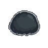
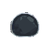

← weaver 미리보기 / 몬스터 부유체 앵커 후보
몬스터 부유체(일반) — 스타일 앵커 후보
PixelLab 실제 생성 4종. 이 중 1개를 void-fauna 스타일 앵커로 확정하면, 나머지 3 아키타입(🔴 장갑·🟡 낙하·게이트)을 같은 DNA로 양산한다. 좌 = 본체(중립) / 우 = 런타임 🔵 단서 핍 얹은 인게임 프리뷰(예시).
🛡 매체 게이트 #8 — 이건 실제 생성 아트 후보(룰 도식 아님). 본체엔 카테고리색 0 = 중립 다크 슬레이트+림라이트. 정답 단서(🔵 핍)는 런타임 레이어라 본체 위에 따로 얹힌다(OR=핍 N개).
추천
[0] 둥근 림라이트 블롭
본체(중립)
+ 🔵 단서
가장 깔끔한 둥근 부유체 · 강한 외곽 림 → 다크 트랙에서 또렷. DNA 기준선으로 최적.
[1] 너풀거리는 셸/후드형
본체(중립)

+ 🔵 단서
아래가 너풀거림 → 부유체보단 다른 아키타입(낙하/특수) 느낌. 앵커로는 △.
[2] 각진 면 블롭
본체(중립)
+ 🔵 단서
가독 좋고 림 강함. 약간 각지고 딱딱 → 장갑(🔴)에 더 어울릴 수도.
[3] 둥글지만 평평·림 약함
본체(중립)

+ 🔵 단서
무난하나 림 대비가 약해 다크 트랙에서 덜 도드라짐.
앵커 판정 기준
✓ 중립 다크 슬레이트 — 4색·⚪흰색과 분리
✓ 밝은 림라이트 — 다크 트랙(0C0C11)에서 형태 가독
✓ 카테고리색 0 — 단서는 런타임 핍이 운반(OR)
✓ void fauna DNA — 드론 패밀리와 같은 다크 픽셀톤
결정: 앵커 1개 택1 (추천 [0]). 확정 시 → 그 룩 기준으로 🔴 장갑(2중 외곽+플레이트)·🟡 낙하 파편·게이트(베리어) 양산 → 스테이징 + asset-manifest 레시피 → unity 핸드오프.
원하면 [0]+[2] 둘 다 보관(부유체·장갑 분기 소스)도 가능.
원하면 [0]+[2] 둘 다 보관(부유체·장갑 분기 소스)도 가능.
weaver · 디자인 세션 · 2026-06-17 · PixelLab object 1d24abb5 (4-후보 리뷰) · 부유체 앵커 · unlisted